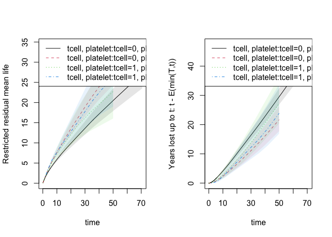
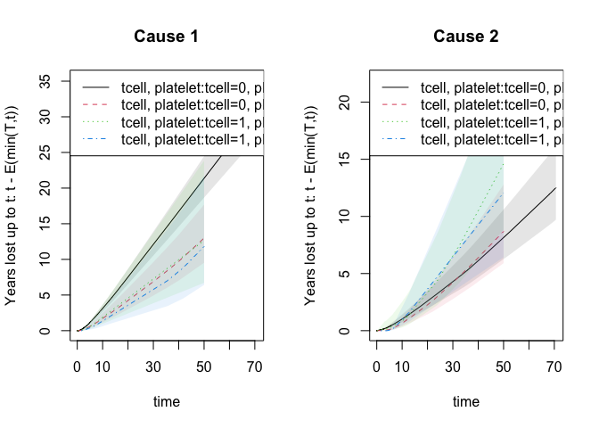
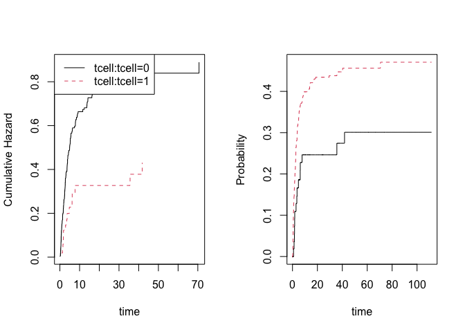
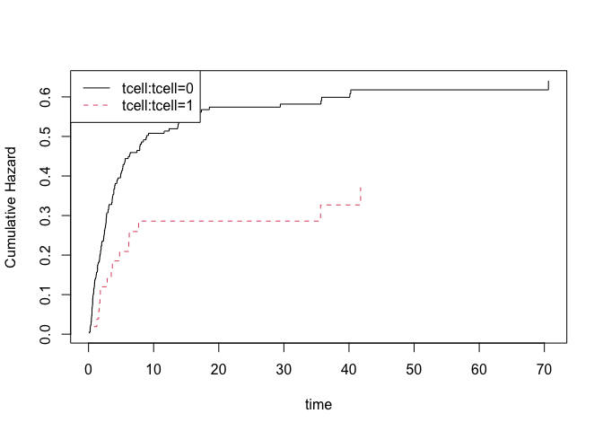
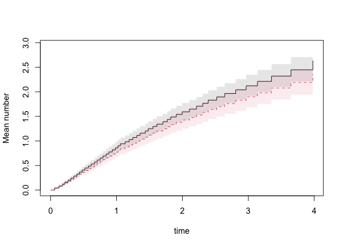

Implementation of various statistical models for multivariate event history data doi:10.1007/s10985-013-9244-x. Including multivariate cumulative incidence models doi:10.1002/sim.6016, and bivariate random effects probit models (Liability models) doi:10.1016/j.csda.2015.01.014. Modern methods for survival analysis, including regression modelling (Cox, Fine-Gray, Ghosh-Lin, Binomial regression) with fast computation of influence functions. Restricted mean survival time regression and years lost for competing risks. Average treatment effects and G-computation. All functions can be used with clusters and will work for large data.
Installation
install.packages("mets")The development version may be installed directly from github (requires Rtools on windows and development tools (+Xcode) for Mac OS X):
remotes::install_github("kkholst/mets", dependencies="Suggests")or to get development version
remotes::install_github("kkholst/mets",ref="develop")Citation
To cite the mets package please use one of the following references
Thomas H. Scheike and Klaus K. Holst and Jacob B. Hjelmborg (2013). Estimating heritability for cause specific mortality based on twin studies. Lifetime Data Analysis. http://dx.doi.org/10.1007/s10985-013-9244-x
Klaus K. Holst and Thomas H. Scheike Jacob B. Hjelmborg (2015). The Liability Threshold Model for Censored Twin Data. Computational Statistics and Data Analysis. http://dx.doi.org/10.1016/j.csda.2015.01.014
BibTeX:
@Article{,
title={Estimating heritability for cause specific mortality based on twin studies},
author={Scheike, Thomas H. and Holst, Klaus K. and Hjelmborg, Jacob B.},
year={2013},
issn={1380-7870},
journal={Lifetime Data Analysis},
doi={10.1007/s10985-013-9244-x},
url={http://dx.doi.org/10.1007/s10985-013-9244-x},
publisher={Springer US},
keywords={Cause specific hazards; Competing risks; Delayed entry;
Left truncation; Heritability; Survival analysis},
pages={1-24},
language={English}}
Examples: Twins Polygenic modelling
First considering standard twin modelling (ACE, AE, ADE, and more models)
# simulated data with pairs of observations in twins on long #data format
set.seed(1)
d <- twinsim(1000, b1=c(1,-1), b2=c(), acde=c(1,1,0,1))
# Polygenic model with Additive genetic effects, and shared and invidual environmental effects (ACE)
ace <- twinlm(y ~ 1, data=d, DZ="DZ", zyg="zyg", id="id")
ace
#> Estimate Std. Error Z value Pr(>|z|)
#> y -0.019439 0.041817 -0.4649 0.642
#> sd(A) 0.902004 0.203739 4.4273 9.544e-06
#> sd(C) 1.137025 0.132852 8.5586 < 2.2e-16
#> sd(E) 1.728992 0.037408 46.2194 < 2.2e-16
#>
#> MZ-pairs DZ-pairs
#> 1000 1000
#>
#> Variance decomposition:
#> Estimate 2.5% 97.5%
#> A 0.15966 0.01867 0.30065
#> C 0.25370 0.13920 0.36820
#> E 0.58664 0.53677 0.63650
#>
#>
#> Estimate 2.5% 97.5%
#> Broad-sense heritability 0.15966 0.01867 0.30065
#>
#> Estimate 2.5% 97.5%
#> Correlation within MZ: 0.41336 0.36229 0.46196
#> Correlation within DZ: 0.33353 0.27933 0.38561
#>
#> 'log Lik.' -8779.953 (df=4)
#> AIC: 17567.91
#> BIC: 17590.31
# An AE-model could be fitted as
ae <- twinlm(y ~ 1, data=d, DZ="DZ", zyg="zyg", id="id", type="ae")
# AIC
AIC(ae)-AIC(ace)
#> [1] 15.20656
# To adjust for the covariates we simply alter the formula statement
ace2 <- twinlm(y ~ x1+x2, data=d, DZ="DZ", zyg="zyg", id="id", type="ace")
## Summary/GOF
summary(ace2)
#> Estimate Std. Error Z value Pr(>|z|)
#> y -0.026049 0.034844 -0.7476 0.4547
#> sd(A) 1.066060 0.072890 14.6256 <2e-16
#> sd(C) 0.980740 0.073569 13.3309 <2e-16
#> sd(E) 0.979980 0.021887 44.7736 <2e-16
#> y~x1 1.006963 0.021900 45.9807 <2e-16
#> y~x2 -0.993802 0.021962 -45.2512 <2e-16
#>
#> MZ-pairs DZ-pairs
#> 1000 1000
#>
#> Variance decomposition:
#> Estimate 2.5% 97.5%
#> A 0.37156 0.27300 0.47012
#> C 0.31446 0.22643 0.40250
#> E 0.31398 0.28381 0.34414
#>
#>
#> Estimate 2.5% 97.5%
#> Broad-sense heritability 0.37156 0.27300 0.47012
#>
#> Estimate 2.5% 97.5%
#> Correlation within MZ: 0.68602 0.65467 0.71502
#> Correlation within DZ: 0.50024 0.45538 0.54257
#>
#> 'log Lik.' -7449.697 (df=6)
#> AIC: 14911.39
#> BIC: 14945Examples: Twins Polygenic modelling time-to-events Data
In the context of time-to-events data we consider the “Liabilty Threshold model” with IPCW adjustment for censoring.
First we fit the bivariate probit model (same marginals in MZ and DZ twins but different correlation parameter). Here we evaluate the risk of getting cancer before the last double cancer event (95 years)
data(prt)
prt0 <- force.same.cens(prt, cause="status", cens.code=0, time="time", id="id")
prt0$country <- relevel(prt0$country, ref="Sweden")
prt_wide <- fast.reshape(prt0, id="id", num="num", varying=c("time","status","cancer"))
prt_time <- subset(prt_wide, cancer1 & cancer2, select=c(time1, time2, zyg))
tau <- 95
tt <- seq(70, tau, length.out=5) ## Time points to evaluate model in
b0 <- bptwin.time(cancer ~ 1, data=prt0, id="id", zyg="zyg", DZ="DZ", type="cor",
cens.formula=Surv(time,status==0)~zyg, breaks=tau)
summary(b0)
#>
#> Estimate Std.Err Z p-value
#> (Intercept) -1.348188 0.026276 -51.3086 < 2.2e-16 ***
#> atanh(rho) MZ 0.735992 0.087838 8.3789 < 2.2e-16 ***
#> atanh(rho) DZ 0.353023 0.068234 5.1737 2.295e-07 ***
#> ---
#> Signif. codes: 0 '***' 0.001 '**' 0.01 '*' 0.05 '.' 0.1 ' ' 1
#>
#> Total MZ/DZ Complete pairs MZ/DZ
#> 1994/3618 997/1809
#>
#> Estimate 2.5% 97.5%
#> Tetrachoric correlation MZ 0.62672 0.51081 0.72024
#> Tetrachoric correlation DZ 0.33905 0.21584 0.45164
#>
#> MZ:
#> Estimate 2.5% 97.5%
#> Concordance 0.03504 0.02779 0.04409
#> Casewise Concordance 0.39458 0.31876 0.47584
#> Marginal 0.08880 0.08086 0.09743
#> Rel.Recur.Risk 4.44351 3.50521 5.38182
#> log(OR) 2.34131 1.87105 2.81157
#> DZ:
#> Estimate 2.5% 97.5%
#> Concordance 0.01952 0.01449 0.02625
#> Casewise Concordance 0.21983 0.16667 0.28415
#> Marginal 0.08880 0.08086 0.09743
#> Rel.Recur.Risk 2.47556 1.81096 3.14016
#> log(OR) 1.23088 0.81020 1.65156
#>
#> Estimate 2.5% 97.5%
#> Broad-sense heritability 0.57533 0.25790 0.89276
#>
#>
#> Event of interest before time 95Liability threshold model with ACE random effects structure
b1 <- bptwin.time(cancer ~ 1, data=prt0, id="id", zyg="zyg", DZ="DZ", type="ace",
cens.formula=Surv(time,status==0)~zyg, breaks=tau)
summary(b1)
#>
#> Estimate Std.Err Z p-value
#> (Intercept) -2.20664 0.16463 -13.4034 <2e-16 ***
#> log(var(A)) 0.43260 0.39149 1.1050 0.2691
#> log(var(C)) -1.98289 2.52342 -0.7858 0.4320
#> ---
#> Signif. codes: 0 '***' 0.001 '**' 0.01 '*' 0.05 '.' 0.1 ' ' 1
#>
#> Total MZ/DZ Complete pairs MZ/DZ
#> 1994/3618 997/1809
#>
#> Estimate 2.5% 97.5%
#> A 0.57533 0.25790 0.89276
#> C 0.05139 -0.20836 0.31114
#> E 0.37328 0.26874 0.47782
#> MZ Tetrachoric Cor 0.62672 0.51081 0.72024
#> DZ Tetrachoric Cor 0.33905 0.21584 0.45164
#>
#> MZ:
#> Estimate 2.5% 97.5%
#> Concordance 0.03504 0.02779 0.04409
#> Casewise Concordance 0.39458 0.31876 0.47584
#> Marginal 0.08880 0.08086 0.09743
#> Rel.Recur.Risk 4.44351 3.50520 5.38182
#> log(OR) 2.34131 1.87104 2.81157
#> DZ:
#> Estimate 2.5% 97.5%
#> Concordance 0.01952 0.01449 0.02625
#> Casewise Concordance 0.21983 0.16667 0.28415
#> Marginal 0.08880 0.08086 0.09743
#> Rel.Recur.Risk 2.47556 1.81096 3.14016
#> log(OR) 1.23088 0.81020 1.65156
#>
#> Estimate 2.5% 97.5%
#> Broad-sense heritability 0.57533 0.25790 0.89276
#>
#>
#> Event of interest before time 95Examples: Twins Concordance for time-to-events Data
data(prt) ## Prostate data example (sim)
## Bivariate competing risk, concordance estimates
p33 <- bicomprisk(Event(time,status)~strata(zyg)+id(id),
data=prt, cause=c(2,2), return.data=1, prodlim=TRUE)
#> Strata 'DZ'
#> Strata 'MZ'
p33dz <- p33$model$"DZ"$comp.risk
p33mz <- p33$model$"MZ"$comp.risk
## Probability weights based on Aalen's additive model (same censoring within pair)
prtw <- ipw(Surv(time,status==0)~country+zyg, data=prt,
obs.only=TRUE, same.cens=TRUE,
cluster="id", weight.name="w")
## Marginal model (wrongly ignoring censorings)
bpmz <- biprobit(cancer~1 + cluster(id),
data=subset(prt,zyg=="MZ"), eqmarg=TRUE)
## Extended liability model
bpmzIPW <- biprobit(cancer~1 + cluster(id),
data=subset(prtw,zyg=="MZ"),
weights="w")
smz <- summary(bpmzIPW)
## Concordance
plot(p33mz,ylim=c(0,0.1),axes=FALSE, automar=FALSE,atrisk=FALSE,background=TRUE,background.fg="white")
axis(2); axis(1)
abline(h=smz$prob["Concordance",],lwd=c(2,1,1),col="darkblue")
## Wrong estimates:
abline(h=summary(bpmz)$prob["Concordance",],lwd=c(2,1,1),col="lightgray",lty=2)
Examples: Cox model, RMST
We can fit the Cox model and compute many useful summaries, such as restricted mean survival and stanardized treatment effects (G-estimation). First estimating the standardized survival
data(bmt)
bmt$time <- bmt$time+runif(408)*0.001
bmt$event <- (bmt$cause!=0)*1
dfactor(bmt) <- tcell.f~tcell
ss <- phreg(Surv(time,event)~tcell.f+platelet+age,bmt)
summary(survivalG(ss,bmt,50))
#> G-estimator :
#> Estimate Std.Err 2.5% 97.5% P-value
#> risk0 0.6539 0.02708 0.6008 0.7070 9.119e-129
#> risk1 0.5641 0.05973 0.4470 0.6811 3.600e-21
#>
#> Average Treatment effect: difference (G-estimator) :
#> Estimate Std.Err 2.5% 97.5% P-value
#> ps0 -0.08982 0.06293 -0.2132 0.03352 0.1535
#>
#> Average Treatment effect: ratio (G-estimator) :
#> log-ratio:
#> Estimate Std.Err 2.5% 97.5% P-value
#> [ps0] -0.1477619 0.109562 -0.3624994 0.06697567 0.1774462
#> ratio:
#> Estimate 2.5% 97.5%
#> 0.8626365 0.6959347 1.0692695
#>
#> Average Treatment effect: 1-G (survival)-ratio (G-estimator) :
#> Estimate Std.Err 2.5% 97.5% P-value
#> [ps0] 0.230711 0.1504459 -0.06415759 0.5255796 0.1251491
sst <- survivalGtime(ss,bmt,n=50)
plot(sst,type=c("survival","risk","survival.ratio")[1])
Based on the phreg we can also compute the restricted mean survival time and years lost (via Kaplan-Meier estimates). The function does it for all times at once and can be plotted as restricted mean survival or years lost at the different time horizons
out1 <- phreg(Surv(time,cause!=0)~strata(tcell,platelet),data=bmt)
rm1 <- resmean.phreg(out1,times=c(50,60))
summary(rm1)
#> strata times rmean se.rmean lower upper years.lost
#> tcell=0, platelet=0 0 50 20.48245 1.411055 17.89542 23.44348 29.51755
#> tcell=0, platelet=1 1 50 28.33071 2.196175 24.33733 32.97934 21.66929
#> tcell=1, platelet=0 2 50 22.74596 4.053717 16.04005 32.25544 27.25404
#> tcell=1, platelet=1 3 50 26.11565 4.230688 19.01112 35.87517 23.88435
par(mfrow=c(1,2))
plot(rm1,se=1)
plot(rm1,years.lost=TRUE,se=1)
For competing risks the years lost can be decomposed into different causes and is based on the integrated Aalen-Johansen estimators for the different strata
## years.lost decomposed into causes
drm1 <- cif.yearslost(Event(time,cause)~strata(tcell,platelet),data=bmt,times=50)
par(mfrow=c(1,2)); plot(drm1,cause=1,se=1); title(main="Cause 1"); plot(drm1,cause=2,se=1); title(main="Cause 2")
summary(drm1)
#> $estimate
#> strata times intF_1 intF_2 se.intF_1 se.intF_2
#> tcell.0..platelet.0.4 0 50 21.367838 8.1497111 1.4766473 1.0945200
#> tcell.0..platelet.1.4 1 50 12.979243 8.6900468 2.0475160 1.7124412
#> tcell.1..platelet.0.4 2 50 12.645426 14.6086098 4.0899812 3.7302594
#> tcell.1..platelet.1.4 3 50 11.809344 12.0750076 3.6737009 3.8902066
#> total.years.lost lower_intF_1 upper_intF_1 lower_intF_2
#> tcell.0..platelet.0.4 29.517549 18.6611064 24.467172 6.2636056
#> tcell.0..platelet.1.4 21.669290 9.5272967 17.681906 5.9059020
#> tcell.1..platelet.0.4 27.254036 6.7084870 23.836494 8.8564043
#> tcell.1..platelet.1.4 23.884352 6.4184533 21.728071 6.4217842
#> upper_intF_2
#> tcell.0..platelet.0.4 10.603763
#> tcell.0..platelet.1.4 12.786686
#> tcell.1..platelet.0.4 24.096854
#> tcell.1..platelet.1.4 22.704875Computations are again done for all time horizons at once as illustrated in the plot.
Examples: Cox model IPTW
We can fit the Cox model with inverse probabilty of treatment weights based on logistic regression. The treatment weights can be time-dependent and then mutiplicative weights are applied (see details and vignette).
data(bmt)
bmt$time <- bmt$time+runif(408)*0.001
bmt$id <- seq_len(nrow(bmt))
bmt$event <- (bmt$cause!=0)*1
dfactor(bmt) <- tcell.f~tcell
fit <- phreg_IPTW(Surv(time,event)~tcell.f+cluster(id),data=bmt,treat.model=tcell.f~platelet+age)
summary(fit)
#>
#> n events
#> 408 248
#>
#> 408 clusters
#> coeffients:
#> Estimate S.E. dU^-1/2 P-value
#> tcell.f1 -0.108518 0.199557 0.089653 0.5866
#>
#> exp(coeffients):
#> Estimate 2.5% 97.5%
#> tcell.f1 0.89716 0.60675 1.3266
head(IC(fit))
#> tcell.f1
#> 1 -1.639213
#> 2 -1.669024
#> 3 -1.749736
#> 4 -1.745936
#> 5 -1.625389
#> 6 -1.793350Examples: Competing risks regression, Binomial Regression
We can fit the logistic regression model at a specific time-point with IPCW adjustment
data(bmt); bmt$time <- bmt$time+runif(408)*0.001
# logistic regresion with IPCW binomial regression
out <- binreg(Event(time,cause)~tcell+platelet,bmt,time=50)
summary(out)
#> n events
#> 408 160
#>
#> 408 clusters
#> coeffients:
#> Estimate Std.Err 2.5% 97.5% P-value
#> (Intercept) -0.180332 0.126755 -0.428766 0.068103 0.1548
#> tcell -0.418194 0.345422 -1.095208 0.258820 0.2260
#> platelet -0.437668 0.240973 -0.909965 0.034630 0.0693
#>
#> exp(coeffients):
#> Estimate 2.5% 97.5%
#> (Intercept) 0.83499 0.65131 1.0705
#> tcell 0.65823 0.33447 1.2954
#> platelet 0.64554 0.40254 1.0352
head(IC(out))
#> [,1] [,2] [,3]
#> [1,] -2.834135 1.633735 2.520232
#> [2,] -2.834135 1.633735 2.520232
#> [3,] -2.834135 1.633735 2.520232
#> [4,] -2.834135 1.633735 2.520232
#> [5,] -2.834135 1.633735 2.520232
#> [6,] -2.834135 1.633735 2.520232
predict(out,data.frame(tcell=c(0,1),platelet=c(1,1)),se=TRUE)
#> pred se lower upper
#> 1 0.3502366 0.04847386 0.2552278 0.4452453
#> 2 0.2618851 0.06969063 0.1252915 0.3984787Examples: Competing risks regression, Fine-Gray/Logistic link
We can fit the Fine-Gray model and the logit-link competing risks model (using IPCW adjustment). Starting with the logit-link model
data(bmt)
bmt$time <- bmt$time+runif(nrow(bmt))*0.01
bmt$id <- 1:nrow(bmt)
## logistic link OR interpretation
or=cifreg(Event(time,cause)~strata(tcell)+platelet+age,data=bmt,cause=1)
summary(or)
#>
#> n events
#> 408 161
#>
#> 408 clusters
#> coeffients:
#> Estimate S.E. dU^-1/2 P-value
#> platelet -0.454568 0.235415 0.187996 0.0535
#> age 0.390178 0.097675 0.083636 0.0001
#>
#> exp(coeffients):
#> Estimate 2.5% 97.5%
#> platelet 0.63472 0.40013 1.0069
#> age 1.47724 1.21986 1.7889
par(mfrow=c(1,2))
## to see baseline
plot(or)
# predictions
nd <- data.frame(tcell=c(1,0),platelet=0,age=0)
pll <- predict(or,nd)
plot(pll)
Similarly, the Fine-Gray model can be estimated using IPCW adjustment
## Fine-Gray model
fg=cifreg(Event(time,cause)~strata(tcell)+platelet+age,data=bmt,cause=1,propodds=NULL)
summary(fg)
#>
#> n events
#> 408 161
#>
#> 408 clusters
#> coeffients:
#> Estimate S.E. dU^-1/2 P-value
#> platelet -0.424744 0.180772 0.187819 0.0188
#> age 0.341964 0.079862 0.086284 0.0000
#>
#> exp(coeffients):
#> Estimate 2.5% 97.5%
#> platelet 0.65394 0.45884 0.9320
#> age 1.40771 1.20374 1.6462
## baselines
plot(fg)
nd <- data.frame(tcell=c(1,0),platelet=0,age=0)
pfg <- predict(fg,nd,se=1)
plot(pfg,se=1)
## influence functions of regression coefficients
head(iid(fg))
#> platelet age
#> [1,] 0.004953454 0.0001245448
#> [2,] 0.005348468 -0.0022341780
#> [3,] 0.006069240 -0.0087211028
#> [4,] 0.006043149 -0.0084185511
#> [5,] 0.004732076 0.0011839004
#> [6,] 0.006331427 -0.0121683704and we can get standard errors for predictions based on the influence functions of the baseline and the regression coefiicients (these are used in the predict function)
baseid <- iidBaseline(fg,time=40)
FGprediid(baseid,nd)
#> pred se-log lower upper
#> [1,] 0.2787513 0.23977174 0.1742299 0.4459754
#> [2,] 0.4506249 0.07265688 0.3908135 0.5195900further G-estimation can be done
dfactor(bmt) <- tcell.f~tcell
fg1 <- cifreg(Event(time,cause)~tcell.f+platelet+age,bmt,cause=1,propodds=NULL)
summary(survivalG(fg1,bmt,50))
#> G-estimator :
#> Estimate Std.Err 2.5% 97.5% P-value
#> risk0 0.4332 0.02749 0.3793 0.4871 6.331e-56
#> risk1 0.2726 0.05861 0.1577 0.3875 3.301e-06
#>
#> Average Treatment effect: difference (G-estimator) :
#> Estimate Std.Err 2.5% 97.5% P-value
#> ps0 -0.1606 0.06351 -0.285 -0.03609 0.01146
#>
#> Average Treatment effect: ratio (G-estimator) :
#> log-ratio:
#> Estimate Std.Err 2.5% 97.5% P-value
#> [ps0] -0.4630779 0.221165 -0.8965534 -0.02960241 0.03627677
#> ratio:
#> Estimate 2.5% 97.5%
#> 0.6293436 0.4079734 0.9708314
#>
#> Average Treatment effect: 1-G (survival)-ratio (G-estimator) :
#> NULLExamples: Marginal mean for recurrent events
We can estimate the expected number of events non-parametrically and get standard errors for this estimator
data(hfactioncpx12)
dtable(hfactioncpx12,~status)
#>
#> status
#> 0 1 2
#> 617 1391 124
gl1 <- recurrentMarginal(Event(entry,time,status)~strata(treatment)+cluster(id),hfactioncpx12,cause=1,death.code=2)
summary(gl1,times=1:5)
#> [[1]]
#> new.time mean se CI-2.5% CI-97.5% strata
#> 325 1 0.8737156 0.06783343 0.7503858 1.017315 0
#> 555 2 1.5718563 0.09572955 1.3949953 1.771140 0
#> 682 3 2.1184963 0.11385721 1.9066915 2.353829 0
#> 748 4 2.6815219 0.15451005 2.3951619 3.002118 0
#> 748.1 5 2.6815219 0.15451005 2.3951619 3.002118 0
#>
#> [[2]]
#> new.time mean se CI-2.5% CI-97.5% strata
#> 284 1 0.7815557 0.06908585 0.6572305 0.9293989 1
#> 499 2 1.4534055 0.10315606 1.2646561 1.6703258 1
#> 601 3 1.9240624 0.12165771 1.6998008 2.1779119 1
#> 645 4 2.3134997 0.14963892 2.0380418 2.6261880 1
#> 645.1 5 2.3134997 0.14963892 2.0380418 2.6261880 1
plot(gl1,se=1)
Examples: Ghosh-Lin for recurrent events
We can fit the Ghosh-Lin model for the expected number of events observed before dying (using IPCW adjustment and get predictions)
data(hfactioncpx12)
dtable(hfactioncpx12,~status)
#>
#> status
#> 0 1 2
#> 617 1391 124
gl1 <- recreg(Event(entry,time,status)~treatment+cluster(id),hfactioncpx12,cause=1,death.code=2)
summary(gl1)
#>
#> n events
#> 2132 1391
#>
#> 741 clusters
#> coeffients:
#> Estimate S.E. dU^-1/2 P-value
#> treatment1 -0.110404 0.078656 0.053776 0.1604
#>
#> exp(coeffients):
#> Estimate 2.5% 97.5%
#> treatment1 0.89547 0.76754 1.0447
## influence functions of regression coefficients
head(iid(gl1))
#> treatment1
#> 1 -1.266428e-04
#> 2 -6.112340e-04
#> 3 2.885192e-03
#> 4 1.308207e-03
#> 5 5.404664e-05
#> 6 2.229380e-03and we can get standard errors for predictions based on the influence functions of the baseline and the regression coefiicients
nd=data.frame(treatment=levels(hfactioncpx12$treatment),id=1)
pfg <- predict(gl1,nd,se=1)
summary(pfg,times=1:5)
#> $pred
#> Lamt Lamt Lamt Lamt Lamt
#> strata0 0.8573256 1.592252 2.121181 2.635437 2.635437
#> strata0 0.7677110 1.425817 1.899458 2.359959 2.359959
#>
#> $se.pred
#> seLamt seLamt seLamt seLamt seLamt
#> 1 0.05719895 0.08818784 0.1096157 0.1429941 0.1429941
#> 2 0.05763288 0.09495475 0.1184567 0.1484200 0.1484200
#>
#> $lower
#> [,1] [,2] [,3] [,4] [,5]
#> strata0 0.7522383 1.428458 1.916860 2.369561 2.369561
#> strata0 0.6626698 1.251343 1.680916 2.086276 2.086276
#>
#> $upper
#> [,1] [,2] [,3] [,4] [,5]
#> strata0 0.9770936 1.774827 2.347281 2.931145 2.931145
#> strata0 0.8894025 1.624617 2.146415 2.669546 2.669546
#>
#> $times
#> [1] 1 2 3 4 5
#>
#> attr(,"class")
#> [1] "summarypredictrecreg"
plot(pfg,se=1)
The influence functions of the baseline and regression coefficients at a specific time-point can be obtained
baseid <- iidBaseline(gl1,time=2)
dd <- data.frame(treatment=levels(hfactioncpx12$treatment),id=1)
GLprediid(baseid,dd)
#> pred se-log lower upper
#> [1,] 1.596065 0.05530215 1.432113 1.778786
#> [2,] 1.429231 0.06660096 1.254329 1.628521Examples: Fixed time modelling for recurrent events
We can fit a log-link regression model at 2 years for the expected number of events observed before dying (using IPCW adjustment)
data(hfactioncpx12)
e2 <- recregIPCW(Event(entry,time,status)~treatment+cluster(id),hfactioncpx12,cause=1,death.code=2,time=2)
summary(e2)
#> n events
#> 741 1052
#>
#> 741 clusters
#> coeffients:
#> Estimate Std.Err 2.5% 97.5% P-value
#> (Intercept) 0.452430 0.060814 0.333236 0.571624 0.0000
#> treatment1 -0.078322 0.093560 -0.261696 0.105052 0.4025
#>
#> exp(coeffients):
#> Estimate 2.5% 97.5%
#> (Intercept) 1.57213 1.39548 1.7711
#> treatment1 0.92467 0.76974 1.1108
head(iid(e2))
#> [,1] [,2]
#> 1 1.959479e-04 -2.266440e-04
#> 2 2.237613e-03 -2.227140e-03
#> 3 -9.349773e-06 1.293789e-03
#> 4 -9.653029e-04 9.653029e-04
#> 5 -1.203962e-04 6.744236e-05
#> 6 -2.861359e-03 2.871831e-03Examples: Regression for RMST/Restricted mean survival for survival and competing risks using IPCW
RMST can be computed using the Kaplan-Meier (via phreg) and the for competing risks via the cumulative incidence functions, but we can also get these estimates via IPCW adjustment and then we can do regression
### same as Kaplan-Meier for full censoring model
bmt$int <- with(bmt,strata(tcell,platelet))
out <- resmeanIPCW(Event(time,cause!=0)~-1+int,bmt,time=30,
cens.model=~strata(platelet,tcell),model="lin")
estimate(out)
#> Estimate Std.Err 2.5% 97.5% P-value
#> inttcell=0, platelet=0 13.61 0.8314 11.98 15.24 3.338e-60
#> inttcell=0, platelet=1 18.90 1.2693 16.42 21.39 3.643e-50
#> inttcell=1, platelet=0 16.19 2.4056 11.48 20.91 1.671e-11
#> inttcell=1, platelet=1 17.77 2.4531 12.96 22.58 4.368e-13
head(iid(out))
#> [,1] [,2] [,3] [,4]
#> [1,] -0.05340931 0 0 0
#> [2,] -0.05342287 0 0 0
#> [3,] -0.05343167 0 0 0
#> [4,] -0.05341367 0 0 0
#> [5,] -0.05342290 0 0 0
#> [6,] -0.05341057 0 0 0
## same as
out1 <- phreg(Surv(time,cause!=0)~strata(tcell,platelet),data=bmt)
rm1 <- resmean.phreg(out1,times=30)
summary(rm1)
#> strata times rmean se.rmean lower upper
#> tcell=0, platelet=0 0 30 13.60681 0.8313556 12.07116 15.33781
#> tcell=0, platelet=1 1 30 18.90421 1.2689962 16.57370 21.56243
#> tcell=1, platelet=0 2 30 16.19493 2.4001354 12.11235 21.65357
#> tcell=1, platelet=1 3 30 17.76902 2.4416127 13.57380 23.26086
#> years.lost
#> tcell=0, platelet=0 16.39319
#> tcell=0, platelet=1 11.09579
#> tcell=1, platelet=0 13.80507
#> tcell=1, platelet=1 12.23098
## competing risks years-lost for cause 1
out1 <- resmeanIPCW(Event(time,cause)~-1+int,bmt,time=30,cause=1,
cens.model=~strata(platelet,tcell),model="lin")
estimate(out1)
#> Estimate Std.Err 2.5% 97.5% P-value
#> inttcell=0, platelet=0 12.102 0.8506 10.435 13.770 6.171e-46
#> inttcell=0, platelet=1 6.883 1.1738 4.582 9.183 4.534e-09
#> inttcell=1, platelet=0 7.259 2.3528 2.648 11.871 2.033e-03
#> inttcell=1, platelet=1 5.779 2.0920 1.679 9.879 5.737e-03
## same as
drm1 <- cif.yearslost(Event(time,cause)~strata(tcell,platelet),data=bmt,times=30)
summary(drm1)
#> $estimate
#> strata times intF_1 intF_2 se.intF_1 se.intF_2
#> tcell=0, platelet=0 0 30 12.102401 4.290792 0.8506248 0.6159844
#> tcell=0, platelet=1 1 30 6.882501 4.213287 1.1737998 0.9054513
#> tcell=1, platelet=0 2 30 7.259290 6.545780 2.3528203 1.9697958
#> tcell=1, platelet=1 3 30 5.778981 6.451995 2.0919811 2.0810363
#> total.years.lost lower_intF_1 upper_intF_1 lower_intF_2
#> tcell=0, platelet=0 16.39319 10.544945 13.889889 3.238466
#> tcell=0, platelet=1 11.09579 4.926916 9.614294 2.764996
#> tcell=1, platelet=0 13.80507 3.846005 13.701826 3.629215
#> tcell=1, platelet=1 12.23098 2.842613 11.748563 3.428832
#> upper_intF_2
#> tcell=0, platelet=0 5.685067
#> tcell=0, platelet=1 6.420183
#> tcell=1, platelet=0 11.806200
#> tcell=1, platelet=1 12.140648Examples: Average treatment effects (ATE) for survival or competing risks
We can compute ATE for survival or competing risks data for the probabilty of dying
bmt$event <- bmt$cause!=0; dfactor(bmt) <- tcell~tcell
brs <- binregATE(Event(time,cause)~tcell+platelet+age,bmt,time=50,cause=1,
treat.model=tcell~platelet+age)
summary(brs)
#> n events
#> 408 160
#>
#> 408 clusters
#> coeffients:
#> Estimate Std.Err 2.5% 97.5% P-value
#> (Intercept) -0.199016 0.130985 -0.455742 0.057711 0.1287
#> tcell1 -0.637823 0.356674 -1.336891 0.061244 0.0737
#> platelet -0.344106 0.246039 -0.826333 0.138121 0.1619
#> age 0.437369 0.107273 0.227117 0.647621 0.0000
#>
#> exp(coeffients):
#> Estimate 2.5% 97.5%
#> (Intercept) 0.81954 0.63398 1.0594
#> tcell1 0.52844 0.26266 1.0632
#> platelet 0.70885 0.43765 1.1481
#> age 1.54863 1.25498 1.9110
#>
#> Average Treatment effects (G-formula) :
#> Estimate Std.Err 2.5% 97.5% P-value
#> treat0 0.4288008 0.0275150 0.3748723 0.4827293 0.0000
#> treat1 0.2898584 0.0659036 0.1606897 0.4190270 0.0000
#> treat:1-0 -0.1389424 0.0717742 -0.2796172 0.0017323 0.0529
#>
#> Average Treatment effects (double robust) :
#> Estimate Std.Err 2.5% 97.5% P-value
#> treat0 0.428212 0.027617 0.374084 0.482340 0.0000
#> treat1 0.250349 0.064792 0.123360 0.377338 0.0001
#> treat:1-0 -0.177863 0.070147 -0.315349 -0.040377 0.0112
head(brs$riskDR.iid)
#> iidriska iidriska
#> [1,] -0.001159045 -3.527789e-05
#> [2,] -0.001201110 7.610120e-05
#> [3,] -0.001326536 3.362024e-04
#> [4,] -0.001320395 3.249943e-04
#> [5,] -0.001140793 -9.098499e-05
#> [6,] -0.001398310 4.597376e-04
head(brs$riskG.iid)
#> riskGa.iid riskGa.iid
#> [1,] -0.001190761 -0.0001528457
#> [2,] -0.001242466 0.0001089006
#> [3,] -0.001355318 0.0006916253
#> [4,] -0.001350731 0.0006677088
#> [5,] -0.001164524 -0.0002838631
#> [6,] -0.001404172 0.0009472093or the the restricted mean survival or years-lost to cause 1
out <- resmeanATE(Event(time,event)~tcell+platelet,data=bmt,time=40,treat.model=tcell~platelet)
summary(out)
#> n events
#> 408 241
#>
#> 408 clusters
#> coeffients:
#> Estimate Std.Err 2.5% 97.5% P-value
#> (Intercept) 2.852932 0.062466 2.730501 2.975363 0.0000
#> tcell1 0.021536 0.122859 -0.219264 0.262335 0.8609
#> platelet 0.303304 0.090722 0.125493 0.481115 0.0008
#>
#> exp(coeffients):
#> Estimate 2.5% 97.5%
#> (Intercept) 17.33854 15.34057 19.5967
#> tcell1 1.02177 0.80311 1.3000
#> platelet 1.35433 1.13371 1.6179
#>
#> Average Treatment effects (G-formula) :
#> Estimate Std.Err 2.5% 97.5% P-value
#> treat0 19.26592 0.95907 17.38617 21.14566 0.0000
#> treat1 19.68532 2.22765 15.31920 24.05143 0.0000
#> treat:1-0 0.41940 2.41046 -4.30502 5.14382 0.8619
#>
#> Average Treatment effects (double robust) :
#> Estimate Std.Err 2.5% 97.5% P-value
#> treat0 19.28496 0.95789 17.40754 21.16238 0.0000
#> treat1 20.34976 2.54072 15.37004 25.32949 0.0000
#> treat:1-0 1.06480 2.70943 -4.24558 6.37519 0.6943
head(out$riskDR.iid)
#> iidriska iidriska
#> [1,] -0.05142919 0.005889929
#> [2,] -0.05143849 0.005889929
#> [3,] -0.05144453 0.005889929
#> [4,] -0.05143218 0.005889929
#> [5,] -0.05143852 0.005889929
#> [6,] -0.05143006 0.005889929
head(out$riskG.iid)
#> riskGa.iid riskGa.iid
#> [1,] -0.05185661 -0.01866232
#> [2,] -0.05186599 -0.01866507
#> [3,] -0.05187208 -0.01866686
#> [4,] -0.05185962 -0.01866320
#> [5,] -0.05186601 -0.01866508
#> [6,] -0.05185748 -0.01866257
out1 <- resmeanATE(Event(time,cause)~tcell+platelet,data=bmt,cause=1,time=40,
treat.model=tcell~platelet)
summary(out1)
#> n events
#> 408 157
#>
#> 408 clusters
#> coeffients:
#> Estimate Std.Err 2.5% 97.5% P-value
#> (Intercept) 2.806125 0.069617 2.669677 2.942572 0.0000
#> tcell1 -0.374420 0.247750 -0.860000 0.111161 0.1307
#> platelet -0.491637 0.164933 -0.814900 -0.168375 0.0029
#>
#> exp(coeffients):
#> Estimate 2.5% 97.5%
#> (Intercept) 16.54567 14.43531 18.9646
#> tcell1 0.68769 0.42316 1.1176
#> platelet 0.61162 0.44268 0.8450
#>
#> Average Treatment effects (G-formula) :
#> Estimate Std.Err 2.5% 97.5% P-value
#> treat0 14.52969 0.95687 12.65426 16.40512 0.000
#> treat1 9.99190 2.37781 5.33148 14.65232 0.000
#> treat:1-0 -4.53779 2.57475 -9.58420 0.50862 0.078
#>
#> Average Treatment effects (double robust) :
#> Estimate Std.Err 2.5% 97.5% P-value
#> treat0 14.511634 0.957828 12.634326 16.388943 0.0000
#> treat1 9.361845 2.416703 4.625195 14.098495 0.0001
#> treat:1-0 -5.149790 2.597556 -10.240906 -0.058673 0.0474Here event is 0/1 thus leading to restricted mean and cause taking the values 0,1,2 produces regression for the years lost due to cause 1.
Examples: While Alive estimands for recurrent events
We consider an RCT and aim to describe the treatment effect via while alive estimands
data(hfactioncpx12)
dtable(hfactioncpx12,~status)
#>
#> status
#> 0 1 2
#> 617 1391 124
dd <- WA_recurrent(Event(entry,time,status)~treatment+cluster(id),hfactioncpx12,time=2,death.code=2)
summary(dd)
#> While-Alive summaries:
#>
#> RMST, E(min(D,t))
#> Estimate Std.Err 2.5% 97.5% P-value
#> treatment0 1.859 0.02108 1.817 1.900 0
#> treatment1 1.924 0.01502 1.894 1.953 0
#>
#> Estimate Std.Err 2.5% 97.5% P-value
#> [treatment0] - [treat.... -0.06517 0.02588 -0.1159 -0.01444 0.0118
#>
#> Null Hypothesis:
#> [treatment0] - [treatment1] = 0
#> mean events, E(N(min(D,t))):
#> Estimate Std.Err 2.5% 97.5% P-value
#> treatment0 1.572 0.09573 1.384 1.759 1.375e-60
#> treatment1 1.453 0.10315 1.251 1.656 4.376e-45
#>
#> Estimate Std.Err 2.5% 97.5% P-value
#> [treatment0] - [treat.... 0.1185 0.1407 -0.1574 0.3943 0.4
#>
#> Null Hypothesis:
#> [treatment0] - [treatment1] = 0
#> _______________________________________________________
#> Ratio of means E(N(min(D,t)))/E(min(D,t))
#> Estimate Std.Err 2.5% 97.5% P-value
#> treatment0 0.8457 0.05264 0.7425 0.9488 4.411e-58
#> treatment1 0.7555 0.05433 0.6490 0.8619 5.963e-44
#>
#> Estimate Std.Err 2.5% 97.5% P-value
#> [treatment0] - [treat.... 0.09022 0.07565 -0.05805 0.2385 0.233
#>
#> Null Hypothesis:
#> [treatment0] - [treatment1] = 0
#> _______________________________________________________
#> Mean of Events per time-unit E(N(min(D,t))/min(D,t))
#> Estimate Std.Err 2.5% 97.5% P-value
#> treat0 1.0725 0.1222 0.8331 1.3119 1.645e-18
#> treat1 0.7552 0.0643 0.6291 0.8812 7.508e-32
#>
#> Estimate Std.Err 2.5% 97.5% P-value
#> [treat0] - [treat1] 0.3173 0.1381 0.04675 0.5879 0.02153
#>
#> Null Hypothesis:
#> [treat0] - [treat1] = 0
dd <- WA_recurrent(Event(entry,time,status)~treatment+cluster(id),hfactioncpx12,time=2,
death.code=2,trans=.333)
summary(dd,type="log")
#> While-Alive summaries, log-scale:
#>
#> RMST, E(min(D,t))
#> Estimate Std.Err 2.5% 97.5% P-value
#> treatment0 0.6199 0.011340 0.5977 0.6421 0
#> treatment1 0.6543 0.007807 0.6390 0.6696 0
#>
#> Estimate Std.Err 2.5% 97.5% P-value
#> [treatment0] - [treat.... -0.03446 0.01377 -0.06145 -0.007478 0.01231
#>
#> Null Hypothesis:
#> [treatment0] - [treatment1] = 0
#> mean events, E(N(min(D,t))):
#> Estimate Std.Err 2.5% 97.5% P-value
#> treatment0 0.4523 0.06090 0.3329 0.5716 1.119e-13
#> treatment1 0.3739 0.07097 0.2348 0.5130 1.376e-07
#>
#> Estimate Std.Err 2.5% 97.5% P-value
#> [treatment0] - [treat.... 0.07835 0.09352 -0.1049 0.2616 0.4022
#>
#> Null Hypothesis:
#> [treatment0] - [treatment1] = 0
#> _______________________________________________________
#> Ratio of means E(N(min(D,t)))/E(min(D,t))
#> Estimate Std.Err 2.5% 97.5% P-value
#> treatment0 -0.1676 0.06224 -0.2896 -0.04563 7.081e-03
#> treatment1 -0.2804 0.07192 -0.4214 -0.13947 9.651e-05
#>
#> Estimate Std.Err 2.5% 97.5% P-value
#> [treatment0] - [treat.... 0.1128 0.09511 -0.07361 0.2992 0.2356
#>
#> Null Hypothesis:
#> [treatment0] - [treatment1] = 0
#> _______________________________________________________
#> Mean of Events per time-unit E(N(min(D,t))/min(D,t))
#> Estimate Std.Err 2.5% 97.5% P-value
#> treat0 -0.3833 0.04939 -0.4801 -0.2865 8.487e-15
#> treat1 -0.5380 0.05666 -0.6491 -0.4270 2.191e-21
#>
#> Estimate Std.Err 2.5% 97.5% P-value
#> [treat0] - [treat1] 0.1548 0.07517 0.007459 0.3021 0.03948
#>
#> Null Hypothesis:
#> [treat0] - [treat1] = 0